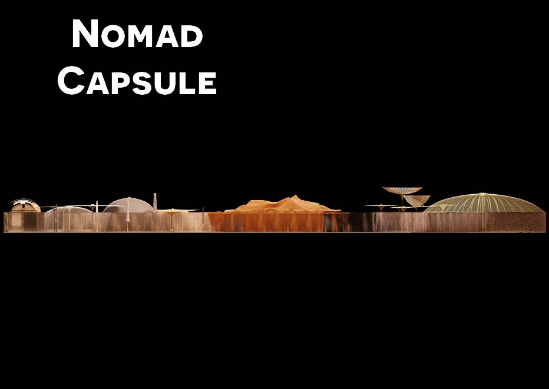
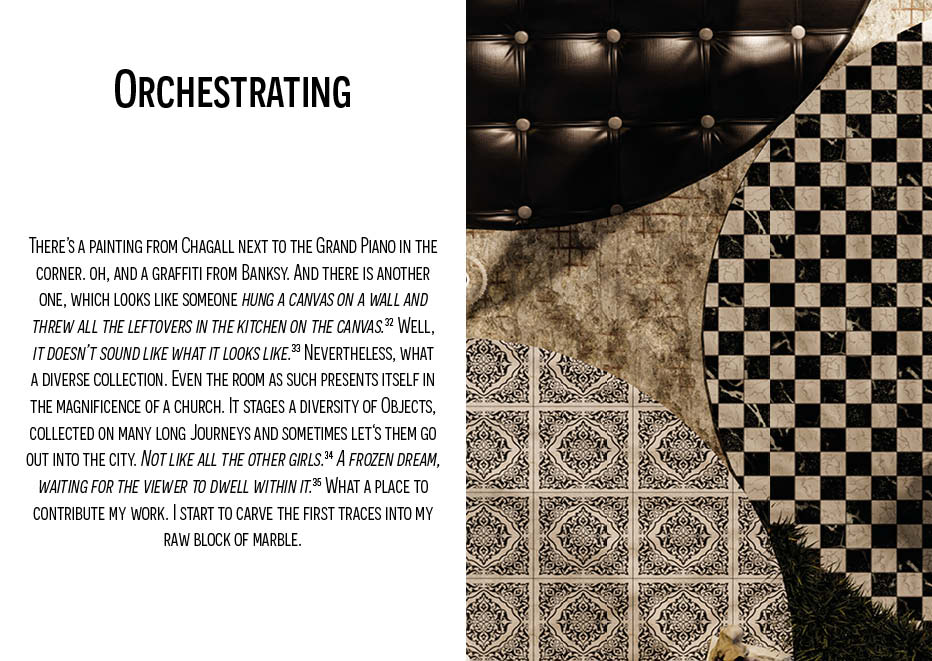

CAN WE BE IN MOTION AS NOMADS IN SETTLEMENTS?
// SYNTHETIC EXODUS //
ETH ZÜRICH - STUDIO METEORA
Charlotte Adigéry & Bolis Pupul are moving together. Charlotte gave birth to a child and they are moving to Brussels as a Family.
They bought a corner house, at a corner of Clemenceau Market, across the gas station, next to the subway station. Their new house is their world,
but also their face. It sets up a stage, while they continue their nomadic journey. They are constantly migrating, like a Shadow with the Sun.
What does it mean to have a nomadic lifestyle, while staying at the same place?



